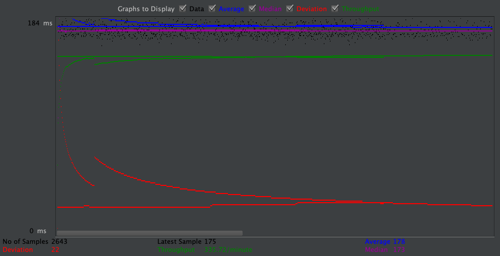
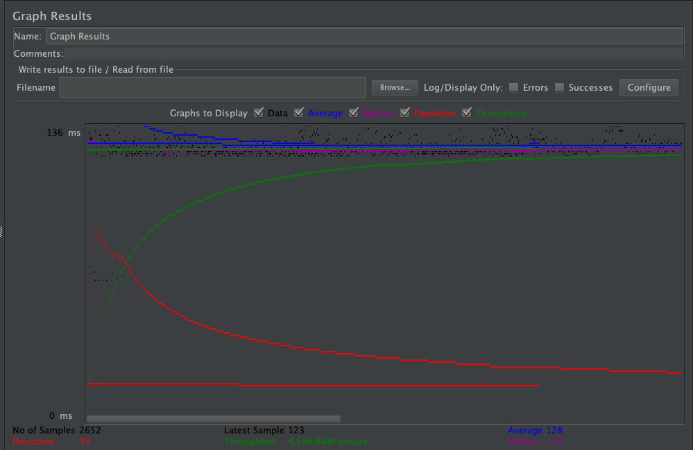
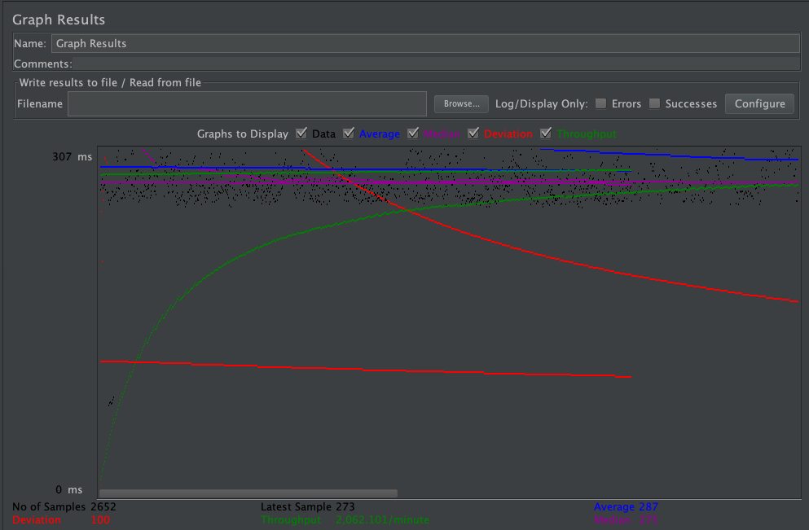
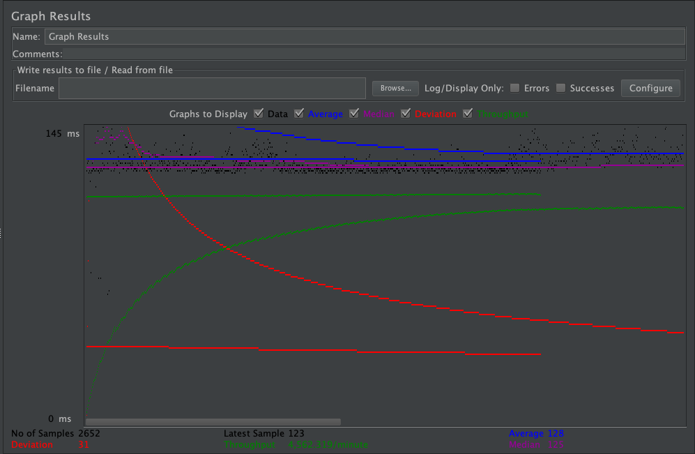
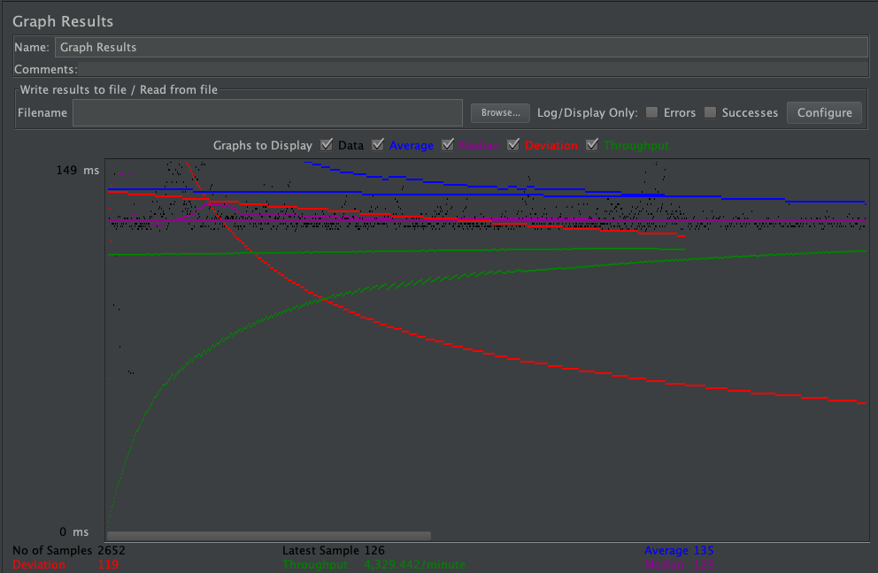
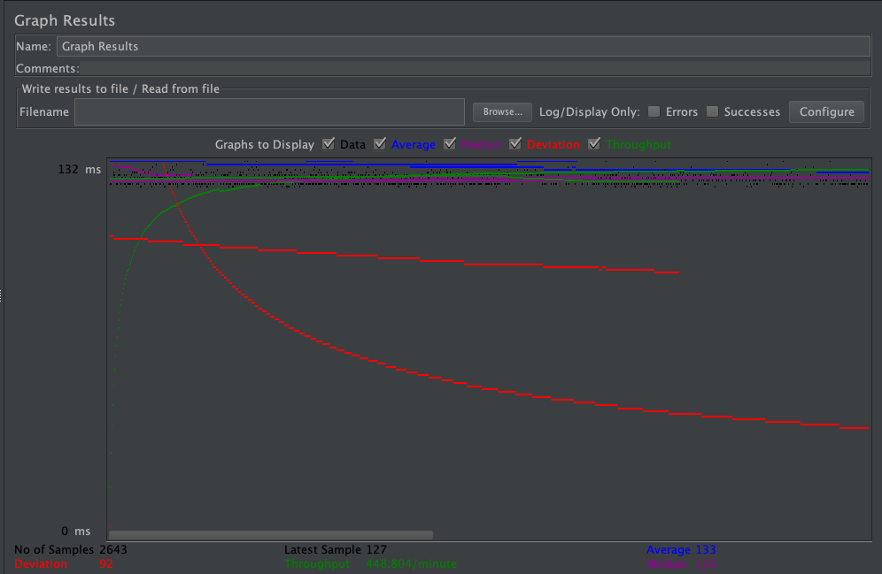
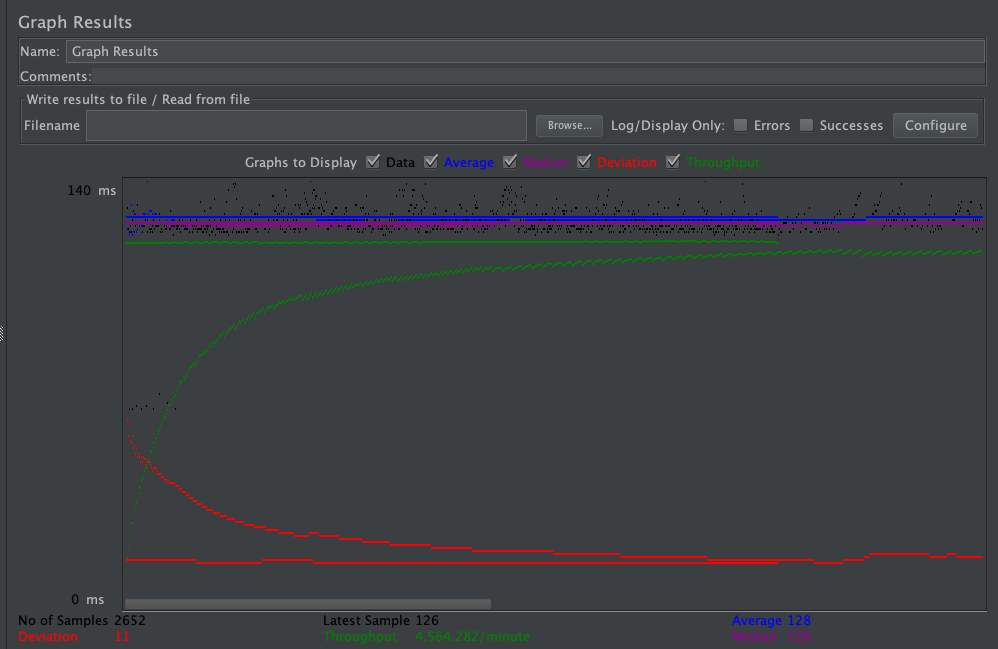
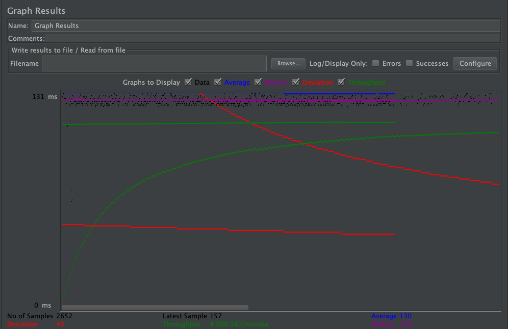
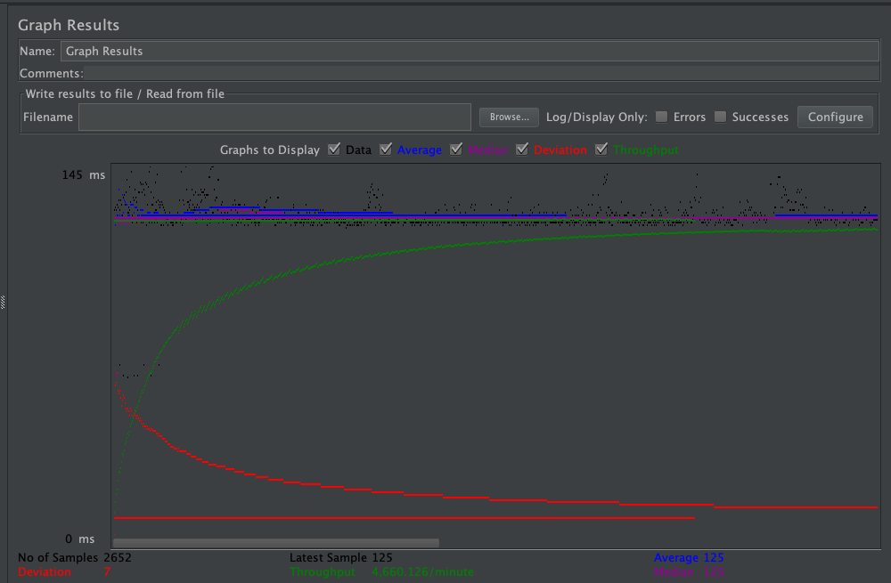

| Single-instance version cases | Graph Results Screenshot | Average Query Time(ms) | Average Search Servlet Time(ms) | Average JDBC Time(ms) | Analysis |
| Case 1: HTTP/1 thread |  | 151 | 1.319482 | 1.064422 | This test was the fastest since it involved only one thread. |
| Case 2: HTTP/10 threads |  | 564 | 1.307769 | 1.147376 | Performance decreased because having more threads means fewer resources for each thread, especially since resources are shared. |
| Case 3: HTTPS/10 threads |  | 578 | 1.512327 | 1.275827 | Performance for HTTPS is much slower because of the added resources needed to be able to make secure https requests. |
| Case 4: HTTP/10 threads/No prepared statements |  | 565 | 1.326516 | 1.138606 | Performance was not much different for having no prepared statements because of the load balancer between for the master and slave instances. |
| Case 5: HTTP/10 threads/No connection pooling |  | 682 | 1.543648 | 1.407378 | Without connection pooling, performance suffers greatly. |
| Scaled version cases | Graph Results Screenshot | Average Query Time(ms) | Average Search Servlet Time(ms) | Average JDBC Time(ms) | Analysis |
| Case 1: HTTP/1 thread |  | 152 | 1.494194 | 1.190359 | Because there is only one thread, all resources are spent on this one thread, resulting in fast performance. |
| Case 2: HTTP/10 threads |  | 645 | 1.74864 | 1.542473 | Performance suffers because of the limited resources for each thread. |
| Case 3: HTTP/10 threads/No prepared statements |  | 597 | 1.646415 | 1.450594 | Not having prepared statements does not impact performance because of laod balancing on master and slave instances. |
| Case 4: HTTP/10 threads/No connection pooling |  | 588 | 1.968364 | 1.748046 | No connection pooling still has poor performance; however, the performance is noticeably better than the scaled-instance because of load balancing. |